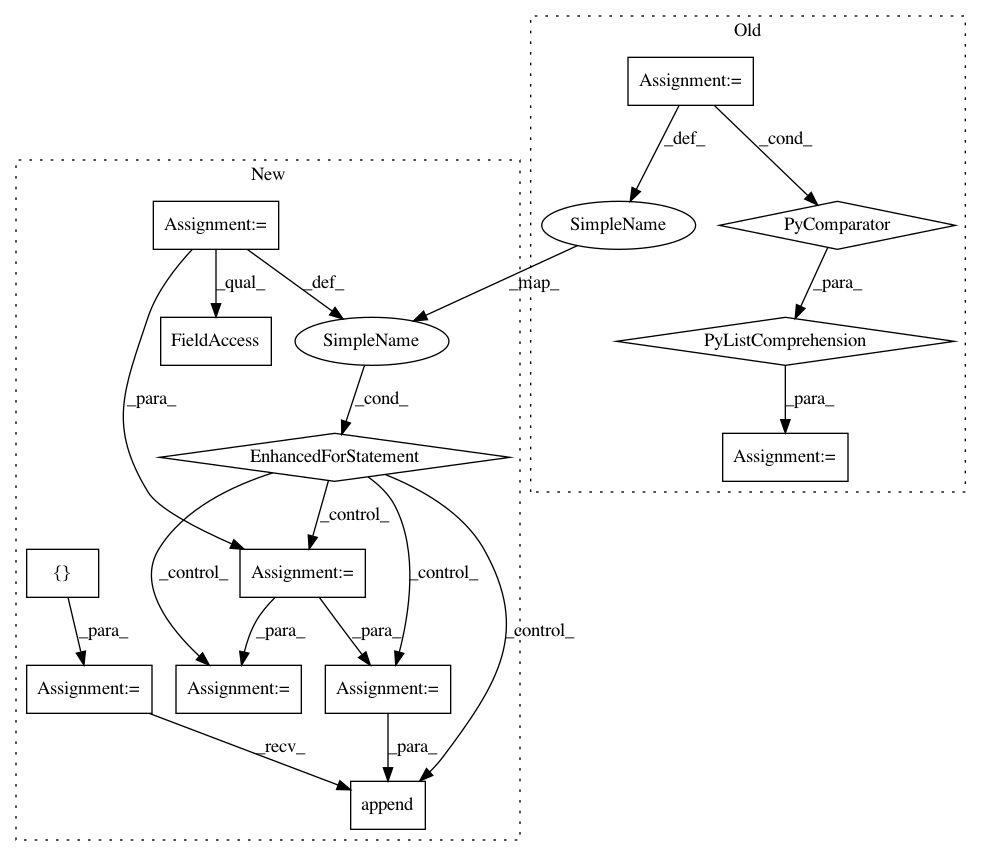

2381a50a70559340a0335288d648b4bb9a675588,slm_lab/agent/algorithm/dqn.py,HydraDQN,sample,#HydraDQN#,440
Before Change
@lab_api
def sample(self):
"""Samples one batch per environment"""
batches = [body.memory.sample() for body in self.agent.nanflat_body_a]
// Package data into pytorch variables
for batch_b in batches:
util.to_torch_batch(batch_b, self.net.gpu)
batch = {"states": [], "next_states": []}
for b in batches:
batch["states"].append(b["states"])
batch["next_states"].append(b["next_states"])
After Change
@lab_api
def sample(self):
"""Samples a batch per body, which may experience different environment"""
batches = []
for body in self.agent.nanflat_body_a:
body_batch = body.memory.sample()
// one-hot actions to calc q_targets
if body.is_discrete:
body_batch["actions"] = util.to_one_hot(body_batch["actions"], body.action_space.high)
body_batch = util.to_torch_batch(body_batch, self.net.gpu)
batches.append(body_batch)
// collect per body for feedforward to hydra heads
batch = {
"states": [body_batch["states"] for body_batch in batches],
"next_states": [body_batch["next_states"] for body_batch in batches],
}
In pattern: SUPERPATTERN
Frequency: 3
Non-data size: 13
Instances
Project Name: kengz/SLM-Lab
Commit Name: 2381a50a70559340a0335288d648b4bb9a675588
Time: 2018-06-12
Author: kengzwl@gmail.com
File Name: slm_lab/agent/algorithm/dqn.py
Class Name: HydraDQN
Method Name: sample
Project Name: keras-team/keras
Commit Name: b6d23b2e2dfc90480519ab52047006b1936fda02
Time: 2016-07-28
Author: jer.despraz@gmail.com
File Name: keras/backend/tensorflow_backend.py
Class Name:
Method Name: batch_set_value
Project Name: kengz/SLM-Lab
Commit Name: 2381a50a70559340a0335288d648b4bb9a675588
Time: 2018-06-12
Author: kengzwl@gmail.com
File Name: slm_lab/agent/algorithm/dqn.py
Class Name: MultitaskDQN
Method Name: sample